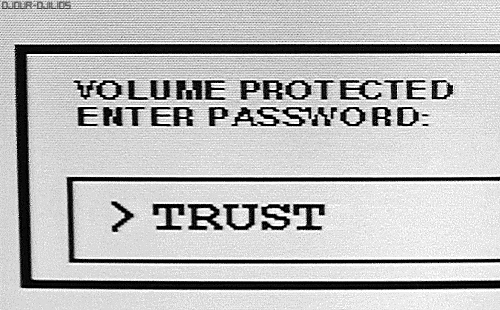

Your passwords are not stored safely¶
… or at least at appears to be the case¶
If you’re reading this there’s a high chance that you have multiple online accounts; each having usernames and passwords. If this is the case you either have multiple passwords memorised or have them saved somewhere. Considering you’ve memorised passwords, it might be that the passwords are either the exact same, or similar or you tend to forget them. Do you think you’re this person? For those who answered yes, it’s time to use a password manager to manage your passwords. Not just that you will now have to remember one master password but have very long, and different passwords for each of your accounts. Also, when I started writing this post i.e. 5th of May 2022 is world password day.

Using a password manager is an integral part of my daily internet usage. I recommend people to use one; esp. those who work online and struggle to memorize multiple passwords. There are a lot of problems with memorizing multiple passwords as discussed above. These tools don’t only relieve you from the burden of memorizing multiple passwords, but also tend to be more secure overall. I was using Lastpass as my password manager for the past couple of years. But now it was high time I switched to some other, well, better password manager. But why did I take such a decision in the first place?
The main motivating factor to move away from Lastpass was that the subscription was getting expired. But this was not the only reason. I had it on my mind to move away from such a tool for a long time. Lastpass did some shady activities back in 2021 which forced all the users to migrate from a free tier to a paid tier. They literally enforced this by disabling sync between the desktop clients and the mobile clients. To add icing to the cake; they have trackers for their clients. Yes, you can disable these trackers. But they easily make a user like me suspicious about a tool like Lastpass.
Another problem is the closed source nature of the tool and the users not knowing about how the code handles everything in the backend. It’s scary not knowing how they store that encrypted file on their cloud, and other aspects of security. Lastpass does have desktop apps for Windows and Mac but does not for Linux. Using Linux as a daily driver, I’d really prefer having a desktop app that works independently of the browser. Don’t get me wrong I’m not saying that they’re bad folks and that they might not be doing anything wrong. But some specific things just made me a not so happy customer.
Making a choice¶
I read different reviews and watched videos and saw the following choices; for each tool, I wanted a set of features that would matter to me
1Pass: One of the best applications out there, most widely used, no trackers on the clients. The good part was that they don’t have trackers enabled. The con was that it is a closed source just like Lastpass. The encrypted file would therefore be stored on their own cloud and in their own way. Also, it was more designed for Mac rather than Linux which is my daily driver.
Bitwarden: A much better, open-source password manager. Although they do provide their own hosted service, we can host it on our own. The problem that I found here was that if I were to host it on my own, then it would add a lot of server maintenance efforts which was something I totally wanted to avoid.
KeePassXC: This tool I found ticked all the boxes based on what I wanted. Firstly it is not a cloud based tool, which meant that I would have to manage the sync across devices on my own. There’s also an Android app in addition to the desktop app which I thought was a good addition.
There are many other good choices out there, which you can feel free to explore
Other features using KeePassXC¶
Yubikey based encryption layer¶
I know that Lastpass accepts Yubikey for authentication. But what is not known is whether it uses Yubikey for encryption as well. This is something I thought to be a game-changer for KeePaasXC. So, in KeePassXC, you can add Yubikey as an additional credential to your encrypted database. This adds another layer of security in addition to your master password. Now since your database is encrypted using both the master.
ChaCha20¶
Yup we’re going to talk about the cha-cha Cuban Latin dance? Oh, I wish! But this is the algorithm used for encryption. This is a newer algorithm compared to the older AES algorithm. I’ve read that this is better in many ways than the older algorithm. So this was an easy choice to go ahead with.
Password migration from Lastpass¶
A very important activity that I wanted to carry out was to easily migrate my passwords from Lastpass to KeePassXC. And I wanted to do this rather than manually copying and pasting my passwords individually like a monkey. No matter how good we’re as humans, copying and pasting the passwords manually is a very slow laborious and error-prone process. Lastpass allows CSV export that can be easily imported into your KeePassXC application.

So, don’t be this monkey! Automate mundane tasks that need accuracy.
Lack of cloud/syncing support¶
Fortunately, or unfortunately KeePassXC does not have auto sync across the cloud to all the other devices. Fortunate for me because I explicitly was looking for this feature. I did not want the tool capable of encryption to be able to connect to the internet. I decided to use my own cloud eg: Dropbox along with some client/script that connects and syncs via Dropbox.
Deciding a master password¶
One of the major challenges is deciding on a master password. There are various properties of passwords to look at and think about when it comes to this:
Long Enough¶
The password should be long enough to make it difficult to brute-force in a short period. I’d say something around greater than 30 characters. eg: ●●●●●●●●●●●●●●●●●●●●●●●●●●●●●●●
Easy to remember¶
It should be easy to remember, should not have too many special symbols and numbers bad eg: h$s8\X2/:<AQ&_Ne:9Y(5F}?E=*Tt_ rather it should look something like this good eg: this is a very long password string
Difficult to guess¶
Now that you’ve used English words and created a password sentence it should be made difficult to guess bad eg: this is a password on the contrary use something very random so a good eg: one out of every five mammals is bats
Break the language¶
Don’t use normal English. Try to invent your own words, and make grammatical mistakes on purpose. This will make it even more difficult for your password to be brute-forced using an English dictionary. Extending the above eg: wone ought of avery 5Ive wawals are bats
Following the four points above will make your password strong enough to be brute-forced for millions of years with the use of some of the fastest computers out there. To add to that if you add additional hardware key like Yubikey, it will make the encryption even harder to crack.
Finally!¶
If you’re still reading, thank you! I appreciate you sticking with me. Whatever follows in the next blog post will be purely technical and will serve as a manual for setting up KeePassXC. I’m writing it as a manual for my future use as well as your use for you to set it up for yourself. I will write an entirely different blog post regarding this. Till then, stay tuned!